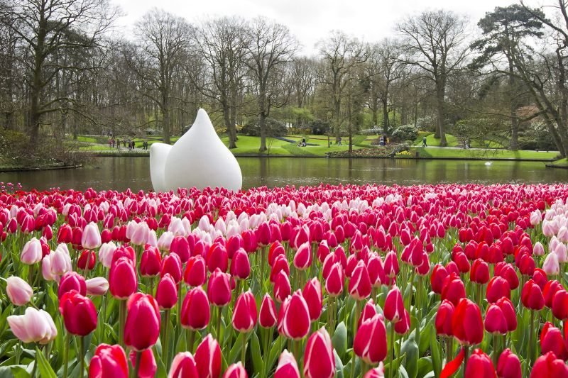

Holanda
A Holanda é um lindo país, com bastantes paisagens planas, clima ameno, canais, belos campos de tulipas, moinhos de vento e rotas de ciclismo. Com 412,1 habitantes por km2 (estimativa/ano de 2018), é também conhecida como Países Baixos, seu nome oficial. O país não está entre os mais escolhidos pelos brasileiros para viagens.

Paris
Não é exagero. Tudo o que dizem sobre Paris é verdade. Poucos lugares do planeta marcam um antes e um depois tão claramente na vida de quem a visita. Habitada por pouco mais de 2 milhões de pessoas sem contar a zona metropolitana –, a capital da França não foi presenteada com uma geografia que a diferenciasse especialmente por sua beleza natural, como o Rio de Janeiro, a Cidade do Cabo ou Veneza...

Alemanha
A Alemanha é um dos países mais organizados do planeta, limpo e pontual, responsável e inteligente. Se você está sonhando há meses com uma viagem para a Alemanha, mas teve os seus planos interrompidos pela pandemia, saiba que agora é a hora de tirar a poeira do passaporte. As fronteiras foram abertas — com algumas regras — e os brasileiros são novamente bem-vindos em terras germânicas.
Entre em contato
- Rua Pastor Hugo Gegembauer, 113
- contato@diariodebordo.com.br
- (19) 9999-9999